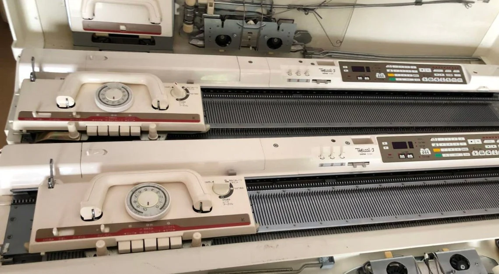
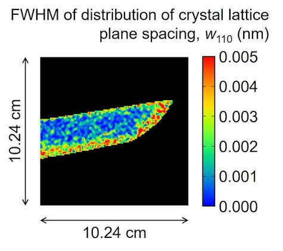

Project Overview
Now that Mantid Imaging has the capability to perform Bragg edge mapping, I would like to explore using the resulting Bragg edge maps as the basis for knitted textiles. Rather than simply displaying neutron imaging data as an image, this project investigates how scientific data can be transformed into a knitted artwork.
A Bragg edge map contains a matrix of values describing the internal structure of a material. The aim is to convert this matrix into a knitting pattern, allowing the data to be recreated physically using an electronic knitting machine.
Method

The project will use a Brother KH-930 electronic knitting machine, which can knit directly from digital stitch patterns.
A Bragg edge matrix exported from Mantid Imaging will be processed using a simple Python script. Each value within the matrix will be mapped to a stitch or needle selection, generating a knitting chart suitable for the KH-930.
The completed pattern will then be transferred to the knitting machine, producing a textile that directly represents neutron imaging data.

Project Goal
This project explores the intersection of neutron imaging, scientific computing, digital fabrication and textile art. By translating Bragg edge maps into knitted patterns, it aims to transform scientific measurements into a tangible artistic representation while demonstrating a novel way of communicating research through craft.